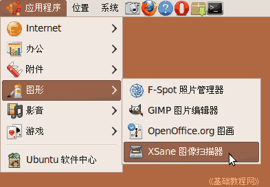
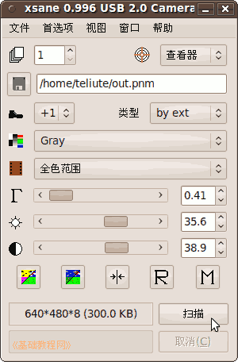

Ubuntu/GNOME 桌面程序指南
作者：TeliuTe 来源：基础教程网
七十八、XSane 图像扫描器 返回目录 下一课使用它，您可以进行图像扫描
1、XSane 图像扫描器
1）点菜单“应用程序 - 图形 - XSane 图像扫描器”，打开窗口；

2）扫描出设备后，显示一个主窗口和一个预览窗口；
3）两个工具选项窗口，可以在“窗口”菜单打勾显示和取消；
4）在扫描仪中放好样本后，点预览窗口下边的“获得预览”查看一下图像和位置；
5）检查好以后，点主窗口下边的“扫描”按钮，开始扫描；

6）完成后可以进行简单处理和保存；
本节学习了XSane 图像扫描器的基础知识，如果你成功地完成了练习，请继续学习下一课内容；
本教程由86团学校TeliuTe制作|著作权所有
基础教程网：http://teliute.org/
美丽的校园……
转载和引用本站内容，请保留作者和本站链接。